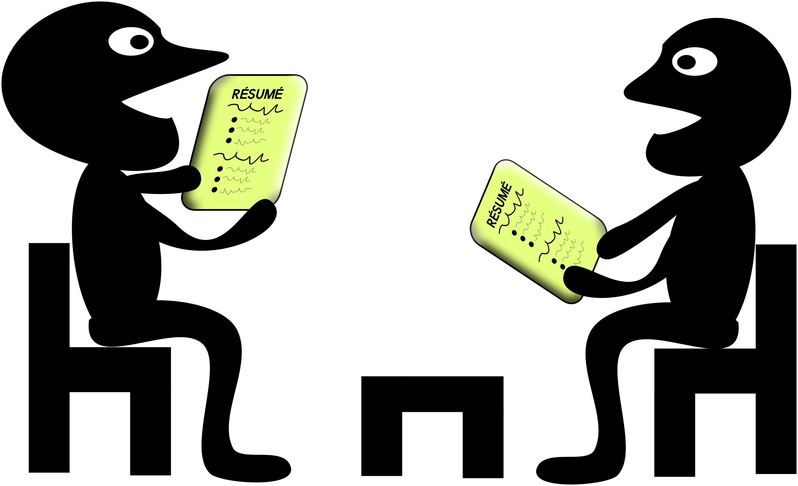

সফটওয়্যার ইঞ্জিনিয়ারিং ক্যারিয়ার নিয়ে ধারাবাহিক তবে বিক্ষিপ্ত একটি সিরিজের প্রথম লেখা এটি। আজকের লেখার মূল বিষয় হচ্ছে ইন্টারভিউতে কোন বিষয়গুলোর ওপর জোর দেওয়া হয়, সেই সম্পর্কে ধারণা দেওয়া। তুমি কোন দেশের নাগরিক, কোন বিশ্ববিদ্যালয় থেকে পাশ করা – সফটওয়্যার ইঞ্জিনিয়ার হিসেবে চাকরি করার জন্য এসব তেমন গুরুত্বপূর্ণ ব্যাপার নয়। যাদের প্রোগ্রামিং ও প্রবলেম সলভিং স্কিল খুব ভালো, তাদের জন্য পৃথিবীর বড় বড় কোম্পানীগুলোর দুয়ার খোলা। আর এরকম কোম্পানী কেবল একটি-দুটি নয়, বরং শতশত কোম্পানী।
ইন্টারভিউ খুব গুরত্বপূর্ণ এ কারণে যে সফটওয়্যার ইঞ্জিনিয়ারিং জবের জন্য তোমার সার্টিফিকেট ও অন্যান্য অভিজ্ঞতা (যেমন প্রোগ্রামিং কনটেস্ট) তোমাকে কেবল ইন্টারভিউ পর্যন্ত পৌঁছাতে সাহায্য করবে। ইন্টারভিউ-তে তুমি কেমন করলে, সেটিই নির্ধারণ করবে যে ওই কোম্পানী তোমাকে নেবে কী না।ইন্টারভিউতে ভালো করতে হলে চাই আলাদা প্রস্তুতি। সাধারণত একটি ইন্টারভিউ হয় ৪০ মিনিট থেকে ৬০ মিনিট। এর বেশিরভাগ সময়ই ব্যায় হয় প্রোগ্রামিং প্রবলেম সলভ করার পেছনে। তো আমরা জেনে নিই যে কোন পাঁচটি বিষয়ের ওপর ইন্টারভিউতে জোর দেওয়া হয়।
১) প্রবলেম সলভিং স্কিলঃ যখন ইন্টারভিউতে তোমাকে একটি প্রবলেম সলভ করতে দেওয়া হয়, তখন দেখা হয় যে তুমি প্রবলেমটি ঠিকভাবে বুঝলে কী না। না বুঝলে প্রয়োজনীয় প্রশ্ন করে সবকিছু পরিষ্কার করে নিলে কী না। সমস্যাটি তুমি কিভাবে বিশ্লেষণ করলে? এটি করতে তোমার কী পরিমাণ সময় লাগল? তোমাকে কতটুকু হিন্টস্ দিতে হয়েছে। এসব বিষয় গুরুত্বপূর্ণ।
২) কোডিং স্কিলঃ যখন তুমি সমস্যা বিশ্লেষণ করে অ্যালগরিদম দাঁড় করালে, সেটির কমপ্লেক্সিটি বের করলে, তারপরে কোনো একটি প্রোগ্রামিং ল্যাঙ্গুয়েজে (সেটা সাধারণত তোমার ইচ্ছামতো) সেই অ্যালগরিদমটি কোড করতে বা ইমপ্লিমেন্ট করতে তোমার কেমন সময় লাগল, ঠিকঠাক ইমপ্লিমেন্ট করতে পারলে কী না – এটিও খুব গুরুত্বপূর্ণ। কোডিং স্টাইল কেমন – ভ্যারিয়েবলের নাম ঠিকঠাক দিলে কী না, কোডিংয়ে ইনডেনটেশন ঠিকমতো করা হয়েছে কী না – এগুলোও বেশ দরকারি জিনিস। আমি নিজে যখন ইন্টারভিউ নেই, তখন কেউ ঠিকমতো কোড ইনডেন্ট না করলে তাকে বাদ দিয়ে দিই।
৩) কম্পিউটার সায়েন্সের মৌলিক জ্ঞানঃ কম্পিউটার সায়েন্সের বেসিক বলতে আমরা বুঝি ডাটা স্ট্রাকচার ও অ্যালগরিদম, ডিজিটাল লজিক, অপারেটিং সিস্টেম, ডাটাবেজ, নেটওয়ার্কিং – এসব মৌলিক বিষয়ের ওপর নূন্যতম ধারণা। তোমাকে বিটওয়াইজ অপারেশন জানতে হবে, থ্রেড ও প্রসেসের পার্থক্য জানতে হবে, রেস কন্ডিশন বুঝতে হবে, রিলেশনাল ডাটাবেজ কী, কেন, নোএসকিউএল কেন প্রয়োজন, এগুলো জানা থাকতে হবে।
৪) অভিজ্ঞতাঃ অভিজ্ঞ প্রার্থীদের ক্ষেত্রে পূর্বে যেসব কোম্পানীতে কাজ করেছ, সেগুলো কেমন, তুমি কোন অংশে কাজ করেছ, সেখানে তোমার অবদান কী – এসব বিষয় বেশ খুঁটিয়ে দেখা হয়। আর ফ্রেশ গ্র্যাজুয়েটদের ক্ষেত্রে প্রোগ্রামিং কনটেস্ট, প্রজেক্ট এসবের অভিজ্ঞতা দেখা হয়। ভার্সিটিতে হয়ত তুমি প্রজেক্ট অন্য কাউকে দিয়ে করিয়ে পার হয়ে যেতে পারবে কিন্তু ইন্টারভিউতে এসে ঠিকই ধরা খাবে। এর জন্য প্রস্তুত থেকো।
৫) সফট স্কিলঃ তোমার টেকনিক্যাল স্কিলের বাইরে তুমি এমনিতে মানুষ কেমন, আচার-ব্যবহার, যোগাযোগের দক্ষতা (কমিউনিকেশন স্কিল) এসবও যাচাই করা হয় (কিন্তু কখন এটা করা হচ্ছে, সেটি তুমি টের পাবে না)। অভিজ্ঞ ইন্টারভিউয়ার কিন্তু ইন্টারভিউ শেষে প্রার্থী সম্পর্কে বেশ কিছু প্রশ্নের উত্তর নিজের মনেই দেয়, সবচেয়ে দরকারি প্রশ্ন হচ্ছে, “আমি কি আমার টিমে এই ব্যক্তির সাথে কাজ করতে খুব খুশি হব?” – উত্তর যদি “না” হয়, তবে চাকরি পাওয়ার কোনো সম্ভাবনা নেই।